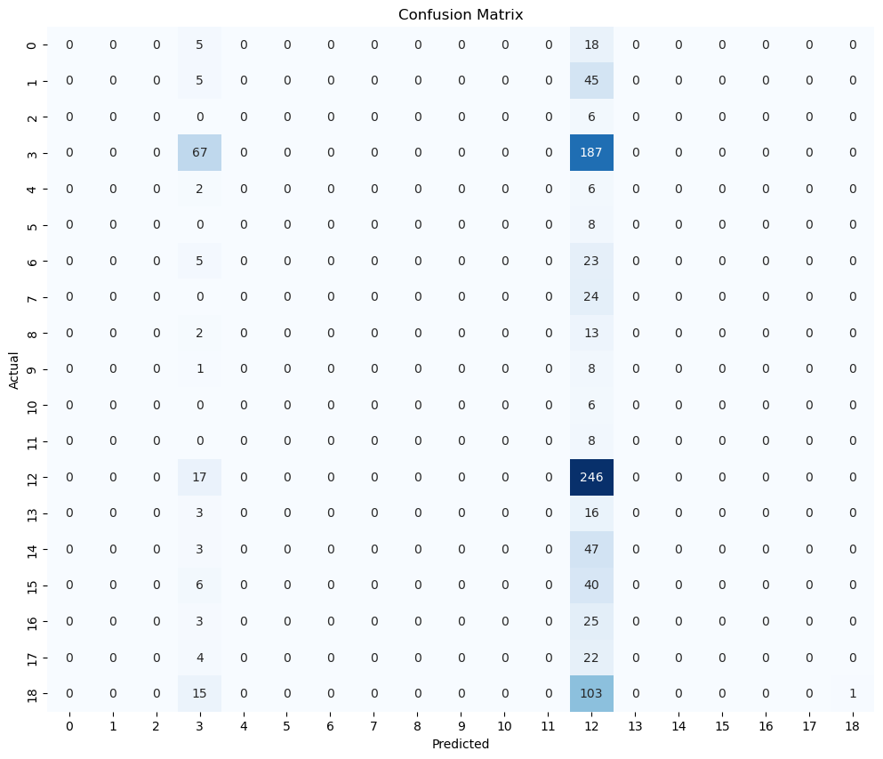

/var/folders/mm/79b3ggcn52x9kcrnqfx5mtk40000gn/T/ipykernel_60159/3921302380.py:19: DtypeWarning: Columns (10) have mixed types. Specify dtype option on import or set low_memory=False.
movies_df = pd.read_csv('movies_metadata.csv')
adult
belongs_to_collection
budget
genres
homepage
id
imdb_id
original_language
original_title
overview
...
release_date
revenue
runtime
spoken_languages
status
tagline
title
video
vote_average
vote_count
0
False
{'id': 10194, 'name': 'Toy Story Collection', ...
30000000
[Animation, Comedy, Family]
http://toystory.disney.com/toy-story
862
tt0114709
en
Toy Story
Led by Woody, Andy's toys live happily in his ...
...
1995-10-30
373554033.0
81.0
[{'iso_639_1': 'en', 'name': 'English'}]
Released
NaN
Toy Story
False
7.7
5415.0
1
False
NaN
65000000
[Adventure, Fantasy, Family]
NaN
8844
tt0113497
en
Jumanji
When siblings Judy and Peter discover an encha...
...
1995-12-15
262797249.0
104.0
[{'iso_639_1': 'en', 'name': 'English'}, {'iso...
Released
Roll the dice and unleash the excitement!
Jumanji
False
6.9
2413.0
2
False
{'id': 119050, 'name': 'Grumpy Old Men Collect...
0
[Romance, Comedy]
NaN
15602
tt0113228
en
Grumpier Old Men
A family wedding reignites the ancient feud be...
...
1995-12-22
0.0
101.0
[{'iso_639_1': 'en', 'name': 'English'}]
Released
Still Yelling. Still Fighting. Still Ready for...
Grumpier Old Men
False
6.5
92.0
3
False
NaN
16000000
[Comedy, Drama, Romance]
NaN
31357
tt0114885
en
Waiting to Exhale
Cheated on, mistreated and stepped on, the wom...
...
1995-12-22
81452156.0
127.0
[{'iso_639_1': 'en', 'name': 'English'}]
Released
Friends are the people who let you be yourself...
Waiting to Exhale
False
6.1
34.0
4
False
{'id': 96871, 'name': 'Father of the Bride Col...
0
[Comedy]
NaN
11862
tt0113041
en
Father of the Bride Part II
Just when George Banks has recovered from his ...
...
1995-02-10
76578911.0
106.0
[{'iso_639_1': 'en', 'name': 'English'}]
Released
Just When His World Is Back To Normal... He's ...
Father of the Bride Part II
False
5.7
173.0
5 rows × 24 columns
I will reduce the movie_df into a smaller dataframe called text_df which will include columns “original_title”, “overview”, and “genres”. I will proceed to clean the text data via lowercasing and removing punctuation.
Code
text_df = movies_df[['original_title', 'overview', 'genres']]text_df = text_df.head(5000)text_df['original_title'] = text_df['original_title'].str.lower()text_df['overview'] = text_df['overview'].str.lower()text_df['overview'] = text_df['overview'].astype(str)text_df['original_title'] = text_df['original_title'].astype(str)import stringdef remove_punctuations(text):return' '.join(word.strip(string.punctuation) for word in text.split())text_df['overview'] = text_df['overview'].apply(remove_punctuations)text_df.head()
#assigning unique numbers to each genre for classification purposesnumbers = {string: number for number, string inenumerate(set(unique_strings))}print(numbers)text_df['category'] = text_df['genres'].map(numbers)text_df.drop(columns=['genres'], inplace=True)text_df.head()
Some movies are categorized into multiple genres. To simplify my model, I will remove duplicated rows so that movies do not appear more than once in my dataset. This means the dataset I will be applying feature selection to will only reflect one category per movie. For the purpose of this task, I will work with one category per movie for simplicity.
/Users/samanthamoon/anaconda3/lib/python3.11/site-packages/sklearn/metrics/_classification.py:1469: UndefinedMetricWarning: Precision and F-score are ill-defined and being set to 0.0 in labels with no predicted samples. Use `zero_division` parameter to control this behavior.
_warn_prf(average, modifier, msg_start, len(result))
/Users/samanthamoon/anaconda3/lib/python3.11/site-packages/sklearn/metrics/_classification.py:1469: UndefinedMetricWarning: Precision and F-score are ill-defined and being set to 0.0 in labels with no predicted samples. Use `zero_division` parameter to control this behavior.
_warn_prf(average, modifier, msg_start, len(result))
/Users/samanthamoon/anaconda3/lib/python3.11/site-packages/sklearn/metrics/_classification.py:1469: UndefinedMetricWarning: Precision and F-score are ill-defined and being set to 0.0 in labels with no predicted samples. Use `zero_division` parameter to control this behavior.
_warn_prf(average, modifier, msg_start, len(result))
/Users/samanthamoon/anaconda3/lib/python3.11/site-packages/sklearn/model_selection/_split.py:725: UserWarning: The least populated class in y has only 3 members, which is less than n_splits=5.
warnings.warn(
From my cross-validation results, I’ve observed that the mean accuracy across all folds is approximately 33.12%. This value represents the average performance of my model across different subsets of the data. The individual accuracy scores for each subset range from around 32.62% to 33.71%. These scores provide a look into the variability of the model’s performance across different subsets of the data. The relatively small variation in individual scores suggests a consistent performance across different subsets. Consistency is desirable, as it indicates the model is not overly sensitive to the specific training and validation sets. The overall accuracy is on the lower side, which suggests that the model may face challenges in accurately predicting the target variable based on the features used.
Confusion Matrix
Code
cm = confusion_matrix(y_test, y_pred)plt.figure(figsize=(12, 10))sns.heatmap(cm, annot=True, fmt="d", cmap="Blues", cbar=False)plt.xlabel("Predicted")plt.ylabel("Actual")plt.title("Confusion Matrix")plt.show()

Conclusion
In conclusion, the application of feature selection and the Naive Bayes classifier to the text data has provided valuable insights into the model’s performance. The utilization of the chi-squared test for feature selection, specifically selecting the top k features, demonstrated its impact on the overall accuracy of the Naive Bayes classifier. The cross-validation results, with a mean accuracy of approximately 33.12%, highlight the model’s consistent but modest predictive capabilities across different subsets of the data.
While the chosen features contribute to a more interpretable and efficient model, there remains room for improvement in predictive accuracy. The lower overall accuracy suggests that the current model may face challenges in capturing the complexities of the text data and accurately classifying documents into the specified categories. Further exploration may involve experimenting with different values of k in feature selection, considering alternative feature extraction techniques, or exploring more sophisticated text classification models to enhance predictive performance.
It is crucial to acknowledge the context-specific nature of text data, where nuances in language and context can significantly impact model performance. Additional evaluation metrics, such as precision, recall, and F1-score, could provide a more detailed understanding of the model’s strengths and weaknesses, especially in the presence of imbalanced classes or specific class priorities.
In summary, the feature selection and Naive Bayes approach offer a foundational framework for text classification, but ongoing refinement and exploration of advanced techniques may be necessary to achieve higher predictive accuracy in this complex and context-rich domain.